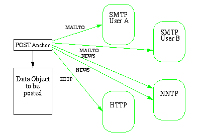
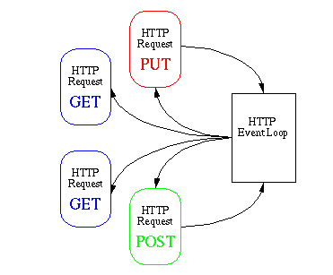
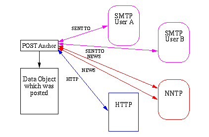

Post Webs - an API for PUT and POST
The HTTP PUT and POST are required
features when extending the WWW to a
fully collaborative tool with features like remote authoring,
annotations, update of data bases etc. Many Web applications are
currently capable of transfering input data in a form from the client
to the server, but a more generic mechanism than forms is needed for
transmitting any data object from a client to a server. This document
specifies how this functionality can be presented to the user and how
it can be implemented using the W3C
Reference Library, a.k.a. WWW Library of Common Code. It defines
the term "Post Web" and the API to to the Library. It is important to
note that neither of this requires any modification to the HTTP/1.0 specification nor to the HTML form definition.
What is a Post Web?
A Post Web is used as the main abstraction mechanism for enabling the
user to send data objects simultanously to multiple destinations. The
purpose of the Post Web is to reflect a set of commonly used
communication methods and put these methods into the Web model. For
example, imagine a user writing a document wanting it to be posted to
the following destinations:
- a news group
- a mailing list
- a college
- a HTTP server where it can be made available to the whole world
Then this can be represented as a web consisting of 5 nodes:

The basic idea of the post interface to the Library is that when using
POST, the user is often interested in posting the data object to more
than one recipient, e.g. the user can send the same data object to two
mailing lists, a news group and at the same time store the data object
as a file on a remote HTTP server.
There are three players in the Post Web model:
- The User
- The User builds the Post Web by specifying the recepients of a data object to be posted.
- The Client
- The Client converts the Post Web into a form that can be handed as a request to the W3C Reference Library
- The Library
- The Library serves the client request and carry out the transactions with the network
The different roles of the players are described in the following
sections.
What is important is that the user has the same interface whether he
or she is posting to a News group, a mailing list or a HTTP server,
and that it is possible to post a data object simultanously to
multiple destinations. The idea behind the Post Web is that the PUT
and POST methods appear as protocol independent as idempotent methods
for example GET or HEAD.
The API is flexible enough to support not only the POST method in
the HTTP Protocol,
but at the same time provide functionality for posting to email
addresses using SMTP
and NNTP news
groups. Posting to other Internet servers such as FTP servers is not
considered in this document, but the concept is designed with the
possibility of including additional Internet protocols.

As indicated in the figure, the user builds a "Post Web" around an anchor element before
the POST is committed and passed to the Library. The rounded boxes
are remote logical data objects that are still to be created and the
lines are logical links between the post anchor and the remote data
objects. The two links to the NNTP box represents that the data object
is to be posted to two different news groups. In practice only one
physical link would actually exist to the NNTP as all posting to a
NNTP Server is done in one single transaction.
The actual user interface is for the client to implement, but
typically a GUI-client could use drag-and-drop icons for building the
Web. The Post Web could be visualized using a user implemented menu of
icons of the most used recipients and then let the user drag lines
between the data object to be posted and the recipients. The Library
helps the user building the Web by providing the functionality of linking the anchors
together.
Creates the web and make sure it doesn't exist already!!
When the user has decided to commit the POST, the post anchor is
passed from the client to the Library together with a request
structure. This is very similar to the current implementation of a
HTTP GET Method. An
important consideration in the design has been to include the
multi-threaded functionality in the posting module so that both PUT
and POST in principle behaves exactly like a GET or any other method
using non-blocking I/O, see also the multi-threaded control flow.

However, PUT and POST methods are inherently different from the GET
method as they require a data flow in both directions. This is
especially the case using PUT as a data object often will be returned
from the remote server.
The routine for handling the POST in the Library parses the Post Web
and groups the individual requests into protocol categories. In the
case of a NNTP request, all POST requests are handled at the same time
and send to the actual NNTP server. When the parsing of the Web is
done, the post module recursively calls the protocol modules to
execute the POST.
The posting mechanism is designed to be compatible with the multi-threaded structure of the Library.
This means that the client is asked for data based on an event driven
action taken by the event loop. The client then gets a stream so that the document to be
posted can be pumped down the stream and out on the net.
When the application has created the source anchor information and
handed it to the Library When a source anchor is handed to the
Library, it walks through the set of destinations and creates an
internal representation of the Post Web using HTRequest
structures -- one for the source and each of the destinations.
The result of the posting varies as a function of the protocol used.
It is a general rule through out the design of the Library that other
protocols than HTTP should be supported but not extended beyond their
individual limitations. This means that the Library has to be flexible
enough to handle more than one result from a posting transaction
dependent on the protocol used.
- Posting to multiple destination must use either libwww threads or
other thread implementations. In the case of libwww threads, it must
use non-blocking, interruptible I/O.
- The Library must be capable of handling concurrent write and read
operations to and from the network.
- It must be possible to perform data conversion from one media type
to another on the fly when posting. The data conversion can either be
performed on the data going to all destinations or on individual
destinations.
- It must be possible to specify individual methods used for each
destination, for example, if three destinations are specified then one
can use PUT, another POST, and the third can use LINK.
- There must be no timing requirements that can lead to race
conditions between any of the destinations and the source or between
destinations.
- The Library must be able to handle Access Authentication and
redirection on both the source and each of the destinations.
- The user must be able to specify a link relation ship between a
source and any of the destinations, for example "Written by".
Building a Request Tree
Building a Stream Tree
Dynamic Update of Trees
- partial success
- Access Authentication
- Redirection

An immediate result from a post transaction is available using NNTP or
HTTP but when using SMTP, the result might be delayed several days. In
practice there is no way that the client can await a response for that
amount of time.
In the figure, postings using SMTP are still rounded because it is not
possible for the user to actually access the document using the URL
returned from the Library. As the NNTP posting failed in the figure,
the document is still non-existent. Only the HTTP posting has turned
into a physical document reference on the remote server.
When all postings are terminated, a new anchor is generated containing
the allocated links on the remote servers for future references
(except in the SMTP case). The amount of links returned might be a
subset of the requested recipients as only postings which terminated
successfully are registered. Using this set, the client must determine
what to do with failed postings. One possibility would be to try again
using the failed part of the Post Web, or simply to discard it.
Henrik Frystyk, libwww@w3.org, June 1995